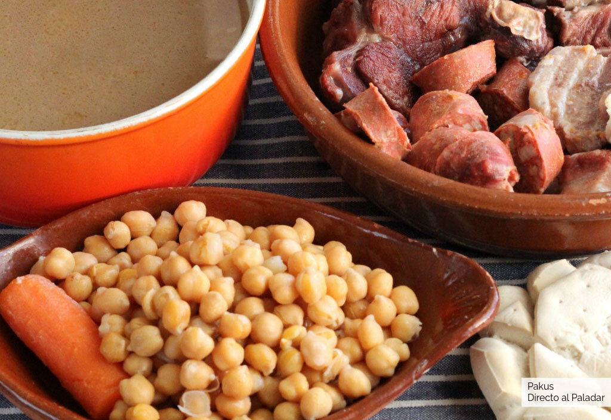

Cocido Madrileño
Receta

A continuación mostraremos paso a paso de como hacerlo:
Ingredientes:
- 300 g de Garbanzos
- 400 g Morcillo
- 200 g Tocino
- 2 Hueso de rodilla de ternera
- 3 Huesos de espinazo de cerdo salado
- 3 Hueso de caña con tuétano
- 3 Chorizos frescos
- 150 g Fideos cabellín o gruesos
- 150 g Gallina
- 3 Patatas
- 2 Zanahorias
- Abudante Agua
Paso a Paso
- La noche antes de hacer cocido pon los garbanzos a remojar en agua a temperatura ambiente en un recipiente grande con una cucharada de sal
- En una olla grande, donde quepan todos los ingredientes cómodamente, pon la carne de res, los huesos de jamón y el trozo de tocino. Llena de agua y pon a fuego alto.
- A medida que se va a ir calentando, vas a empezar a ver impurezas y espuma en la superficie del líquido, quítalas con ayuda de una cuchara o una malla.
- Cuando empiece a hervir, echa los garbanzos en la olla y baja el fuego a la mitad.
- Tapa y deja cocinar por una hora aproximadamente.
- Transcurrido el tiempo, destapa y echa la cebolla, el pollo, el chorizo y la morcilla. Agrega sal y vuelve a tapar.
Apartir de este momento debes estar atento a dos cosas:
- Que no se seque mucho el líquido, el caldo en todo momento tiene que cubrir los ingredientes del cocido madrileño. Si necesitas echarle más agua, que sea caliente, no fría.
- Debes quitarle constantemente la espuma que se pueda formar en la superficie.
Contactanos en tal dirección
Enlace de la información sacada